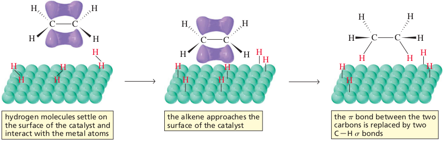
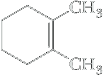
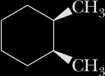
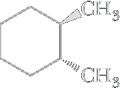
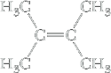

Reduction of alkenes
Most alkenes are reduced quantitatively by molecular hydrogen, H2, in the presence of a transition metal catalyst to give an alkane. Yields are usually quantitative or nearly so.
 Cyclohexene | + | H2 | Pd ⟶ 25 °C, 3 atm |
 Cyclohexane | ΔH° = −119.5 kJ (−28.6 kcal)/mol |
Although the addition of hydrogen to an alkene is exothermic, reduction is immeasurably slow in the absence of a catalyst. Commonly used transition metal catalysts include platinum, palladium, ruthenium, and nickel. Because the conversion of an alkene to an alkane involves reduction by hydrogen in the presence of a catalyst, the process is called catalytic reduction or, alternatively, catalytic hydrogenation.
Monosubstituted and disubstituted carbon-carbon double bonds react readily at room temperature under a few atmospheres (atm) pressure of hydrogen. Trisubstituted carbon-carbon double bonds require slightly elevated temperatures and pressures of up to 100 psi (pounds per square inch). Tetrasubstituted carbon-carbon double bonds are diffi cult to reduce and may require temperatures up to 275°C and hydrogen pressures of 1000 psi. Recall that 1 atm is equal to about 15 psi.
The metal catalyst is used as a finely powdered solid or may be supported on some inert material, such as finely powdered charcoal or alumina. The reaction is usually carried out by dissolving the alkene in ethanol or another nonreacting organic solvent, adding the solid catalyst, and then shaking the mixture under hydrogen gas at pressures of from 1 to 50 atm. Alternatively, the metal may be complexed with certain organic molecules and used in the form of a soluble complex.
Catalytic reduction is stereoselective, with the vast majority proceeding by syn addition of hydrogens to the carbon-carbon double bond.
Mechanism of Catalytic Reduction
The transition metals used in catalytic hydrogenation are able to adsorb large quantities of hydrogen onto their surfaces, probably by forming metal-hydrogen σ bonds. Similarly, alkenes are also adsorbed on metal surfaces with formation of carbon-metal bonds. Addition of hydrogen atoms to the alkene occurs in two steps.
|  1,2-Dimethyl-cyclohexene | + | H2 | Pd ⟶ |
 70% to 85% cis-1,2-Dimethyl-cyclohexane |
+ |  30% to 15% trans-1,2-Dimethyl-cyclohexane (a racemic mixture) |
If addition of hydrogens is syn stereoselective, how then do we account for the formation of a trans product? It has been found that before a second hydrogen can be delivered from the metal surface to complete the reduction, there is transfer of a hydrogen from a carbon atom adjacent to the original double bond to the metal surface along with a newly added hydrogen. This hydrogen transfer, in effect, reverses the first step and forms a new alkene that is isomeric with the original alkene. As shown in the following equation, 1,2-dimethylcyclohexene undergoes isomerization on the metal surface to 1,6-dimethylcyclohexene. This alkene then leaves the metal surface. When it is later readsorbed and reduced, hydrogens are still added to it with syn stereoselectivity, but not necessarily from the same side as the original hydrogen.
| 1,2-Dimethyl-cyclohexene | + | H2/Pt ⟶ |
Pt ⟶ −H2 |  1,6-Dimethylcyclohexene |
+ | H2/Pt ⟶ |
70% to 85% cis-1,2-Dimethyl-cyclohexane |
+ | 30% to 15% trans-1,2-Dimethyl-cyclohexane (a racemic mixture) |
Heats of Hydrogenation and the Relative Stabilities of Alkenes
The heat of hydrogenation of an alkene is its heat of reaction, ΔH°, with hydrogen to form an alkane. Table 6.2 lists heats of reaction for the catalytic hydrogenation of several alkenes. Three important points are derived from the information given in Table 6.2.
The reduction of an alkene to an alkane is an exothermic process. This observation is consistent with the fact that, during hydrogenation, there is net conversion of a H−H bond and a weaker π bond to stronger σ bonds; that is, one s bond (H−H) and one π bond (C=C) are broken, and two new σ bonds (C−H) form. For a comparison of the relative strengths of σ and π bonds, refer to Section 1.10.
Heats of hydrogenation depend on the degree of substitution of the carbon-carbon double bond; the greater the substitution, the lower the heat of hydrogenation. Compare, for example, heats of hydrogenation of ethylene (no substituents), propene (one substituent), 1-butene (one substituent), and the cis and trans isomers of 2-butene (two substituents).
The heat of hydrogenation of a trans alkene is lower than that of the isomeric cis alkene. Compare, for example, the heats of hydrogenation of cis-2-butene and trans-2-butene. Because reduction of each alkene gives butane, any difference in heats of hydrogenation must be caused by a difference in relative energy between the two alkenes (Figure 6.8). The alkene with the lower (less negative) value of ΔH° is the more stable.
We explain the greater stability of trans alkenes relative to cis alkenes in terms of steric strain (Section 2.5A), which can be visualized using spacefilling models (Figure 6.9). In cis-2-butene, the two −CH3 groups are sufficiently close to each other that there is steric strain caused by repulsion between the two methyl groups. This repulsion is refl ected in the larger heat of hydrogenation (decreased stability) of cis-2-butene compared with trans-2-butene [approximately 4.2 kJ (1.0 kcal)/mol]. Thus hydrogenation allows measurement of the strain energy of cis-2-butene directly.
| Name | Structural Formula | ΔH° [kJ(kcal)/mol] |
|---|---|---|
| Ethylene | CH2=CH2 | −137 (−32.8) |
| Propene | CH3CH=CH2 | −126 (−30.1) |
| 1-Butene | CH3CH2CH=CH2 | −127 (−30.3) |
| cis-2-Butene |  | −119.7 (−28.6) |
| trans-2-Butene |  | −115.5 (−27.6) |
| 2-Methyl-2-butene |  | −113 (−26.9) |
| 2,3-Dimethyl-2-butene |  | −119.7 (−28.6) |
We explain the greater stability of trans alkenes relative to cis alkenes in terms of steric strain (Section 2.5A), which can be visualized using spacefilling models (Figure 6.9). In cis-2-butene, the two −CH3 groups are sufficiently close to each other that there is steric strain caused by repulsion between the two methyl groups. This repulsion is reflected in the larger heat of hydrogenation (decreased stability) of cis-2-butene compared with trans-2-butene [approximately 4.2 kJ (1.0 kcal)/mol]. Thus hydrogenation allows measurement of the strain energy of cis-2-butene directly.